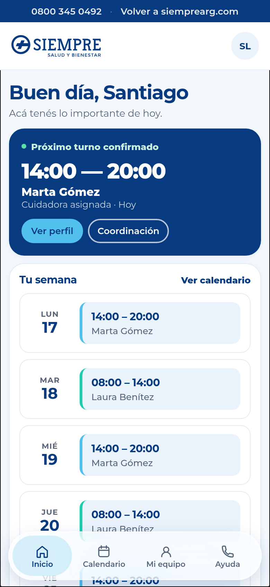
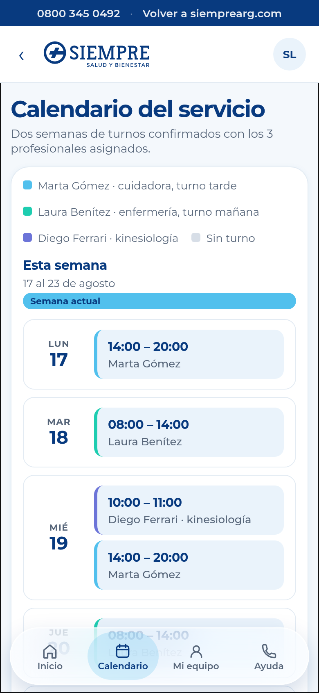
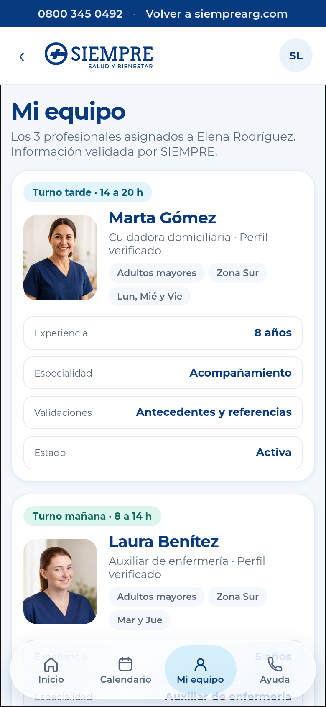

Mirá los próximos turnos, los horarios de la semana y cualquier cambio programado, con el profesional de cada día.
Portal de clientes

La tranquilidad
de saber que todoestá organizado
El espacio digital de SIEMPRE para seguir el cuidado de tu familiar: turnos, profesionales asignados y contactos, siempre a mano y sin tener que llamar.
Sin costoIncluido en tu servicio de SIEMPRE
24/7Consultá la información cuando la necesites
+20 añosDe experiencia en cuidados domiciliarios
Qué podés hacerMenos llamados,
Menos llamados,
más tranquilidad
Todo lo que antes preguntabas por teléfono, ahora lo consultás en el momento.
Conocé el perfil de cada profesional asignado —cuidadoras, enfermería, kinesiología— con su experiencia y las validaciones de SIEMPRE.
Coordinación, guardia 24 h y administración a un toque, sin buscar números ni esperar en línea.
El portalTodo lo importante,
Todo lo importante,
desde el celular
Estas son las mismas pantallas que vas a recorrer en el prototipo.

Inicio
El próximo turno, quién viene hoy y los accesos rápidos.

Calendario
Dos semanas de turnos de un vistazo, con cada profesional identificado.

Mi equipo
Cuidadoras, enfermería y kinesiología, con perfiles validados por SIEMPRE.
Para quién esUn portal,
Un portal,
dos miradas del mismo cuidado
Familias y profesionales ven la información que cada uno necesita.
Si sos familiar o paciente
Seguí los turnos, conocé a quien acompaña a tu familiar y tené los contactos de coordinación siempre a mano.
Ingresar como familiarSi sos profesional de SIEMPRE
Tu agenda del día, la dirección con referencias de ingreso, las indicaciones del paciente y a quién avisar ante cualquier novedad.
Ingresar como profesionalCómo empezarEmpezar te lleva
Empezar te lleva
un minuto
No hace falta instalar nada: funciona desde el navegador del celular.
Con el DNI del titular del servicio o tu correo electrónico.
Familiar o paciente, o profesional de SIEMPRE. Cada perfil ve lo suyo.
Entrás y ya ves el próximo turno y la cuidadora asignada.
Mi SiempreQue el cuidado de tu familia
Que el cuidado de tu familia
esté siempre claro
Ingresá al portal y mirá cómo funciona.